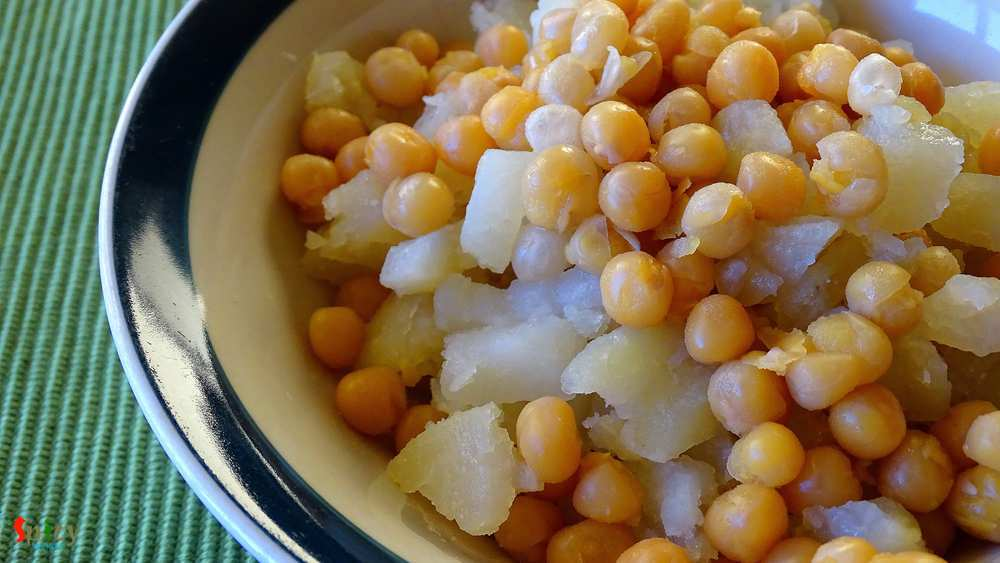
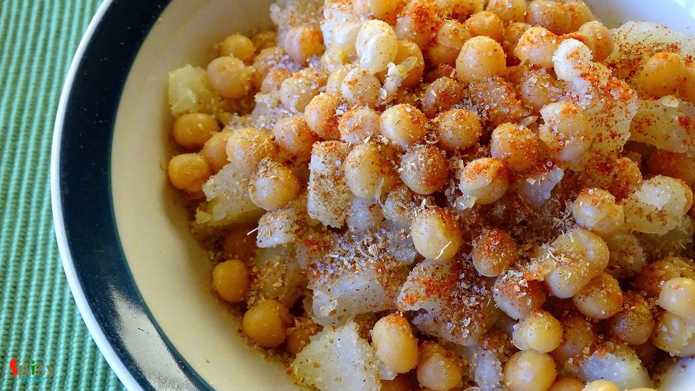
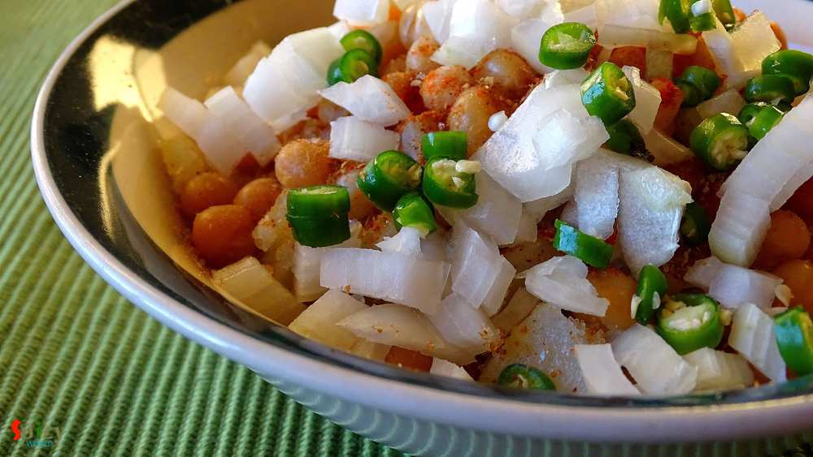
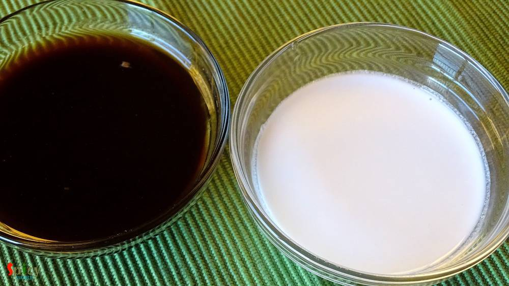
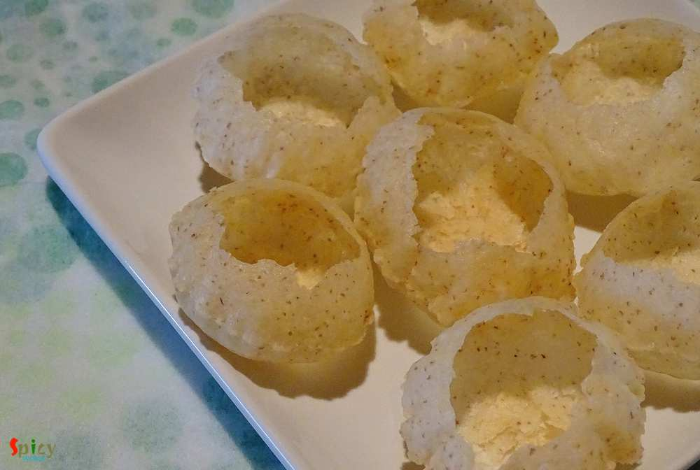
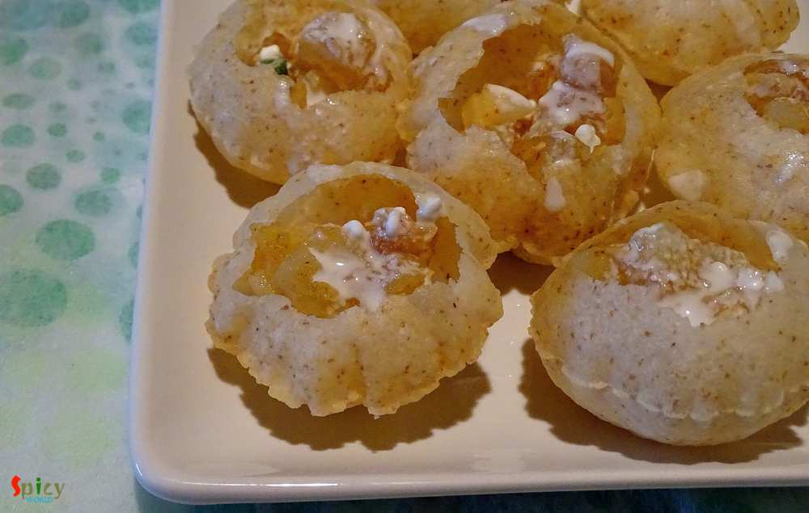
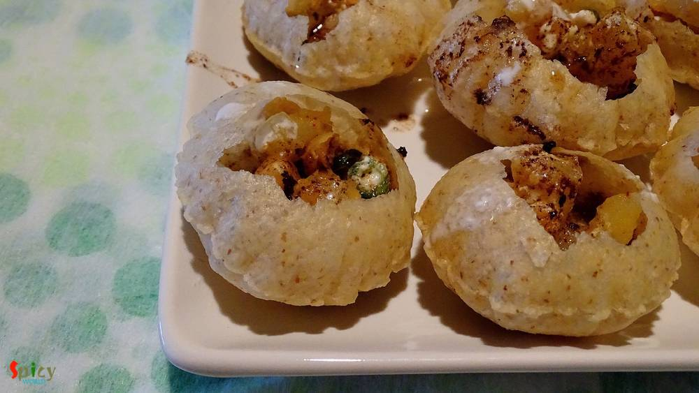
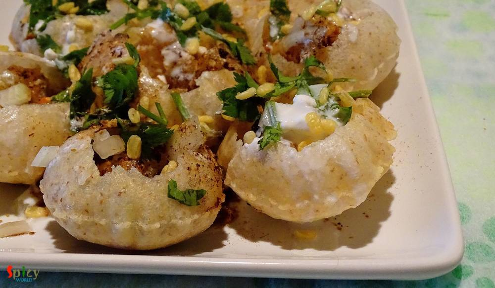
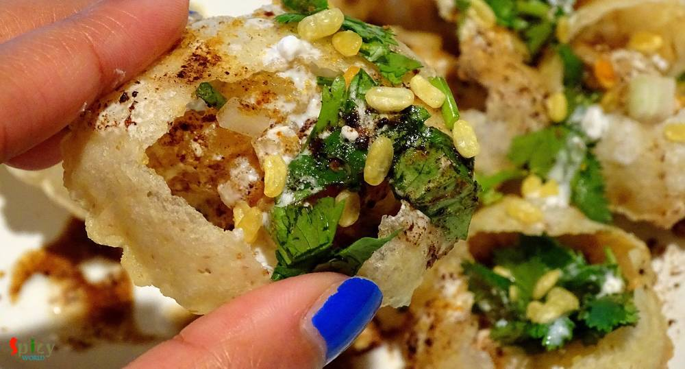

Simple and Easy Recipes
Doi phuchka / Dahi puri Chaat
© 2016 Spicy World, Published on: Jan 5, 2016
Do I really need to say anything about this ?? It's 'chaat' !! You can get several types of chaat in India from street vendors. They all are very very tasty. One of the famous chaat in Kolkata is 'doi phuchka'. They fill the phuchkas with spicy potato filling, thick curd mixture, tamarind chutney and sprinkle some chopped onion and coriander leaves .. ssluurrpp ... !!! Now I am staying in USA, so I had to make these kind of 'chaat's at home. But believe me, after making this, you will be finding excuses to make them again and again.

Ingredients
- 20 phuchkas / puris.
- 1 boiled potato.
- half cup boiled yellow beans / matar.
- 1/4 th cup of chopped onion.
- 2 Teaspoons of chopped coriander leaves.
- 3 green chilies chopped.
- Spice powder (half Teaspoon of red chilli powder, 1 Teaspoon roasted cumin and coriander powder, half Teaspoon of amchoor powder).
- Salt and sugar.
- 1 Teaspoon of tamarind.
- 4 Tablespoons of curd.
- Water.

Steps
Crumble the boiled potato in a bowl. Do not mash them fully.
Add boiled beans to the crumbled potato.
Add all the above mentioned spice powder and salt.
Then add chopped onion and green chilies. Keep 2 Teaspoons of chopped onion aside for garnishing.
Mix everything very well.
Take curd, little and half Teaspoon of sugar in a bowl. Mix it well.
Soak tamarind in little water for 1 hour.
Then mash the soaked tamarind in that water and add little salt, mix it.
Make hole in the center of phuchkas and place them on a plate.
Fill the phuchkas with spicy potato mixture.
Then spread the curd mixture over every phuchka.
Again spread the tamarind water over them.
Lastly sprinkle chopped onion, coriander leaves, little spice powder, remaining curd and tamarind water over them.
If you have sev / fried boondi / fried moong, sprinkle some of them on top and serve.
Your Doi phuchka is ready ...
Enjoy them with your loved ones ...
")